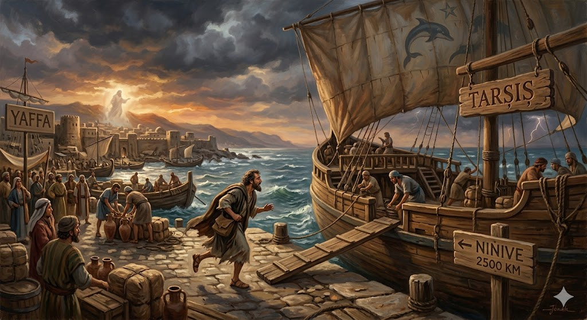
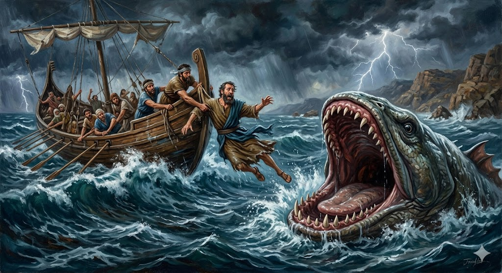
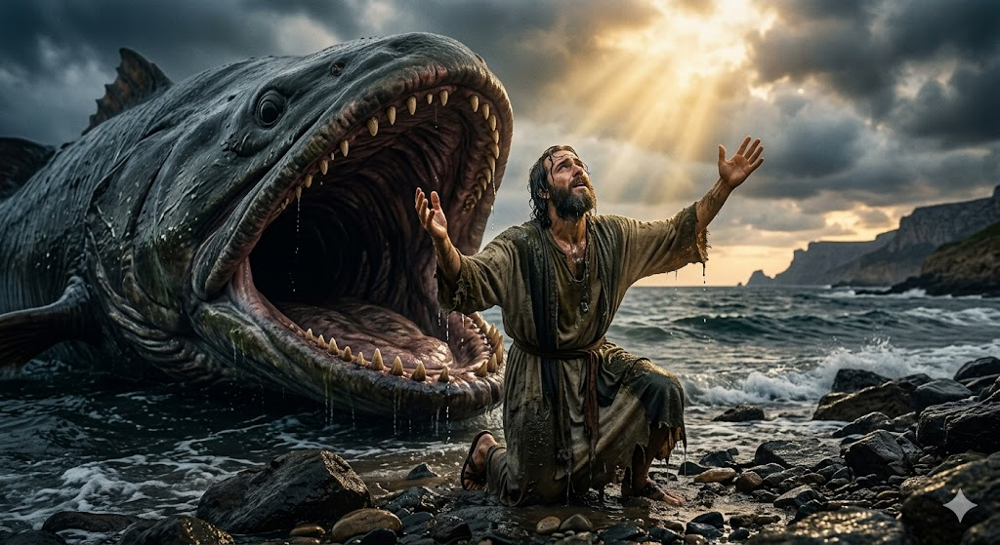

Dumnezeu i-a dat lui Iona o misiune importantă pentru a ajuta niște oameni, dar el a crezut că se poate ascunde de Creatorul său. Hai să vedem ce se întâmplă când încercăm să fugim în direcția greșită!
1. Fuga și Furtuna
Dumnezeu i-a spus lui Iona să meargă la Ninive. În loc să asculte, Iona s-a urcat pe o corabie care mergea exact în direcția opusă! Dar o mare furtună s-a stârnit pe mare, arătându-i că oriunde ai merge, nu te poți ascunde de privirea lui Dumnezeu.

2. Salvarea Neobișnuită
Pentru a salva corabia de la scufundare, Iona a fost aruncat în valuri. Însă Dumnezeu nu l-a abandonat! A trimis un pește uriaș care l-a înghițit. Acolo, în întunericul din burta peștelui, Iona a stat trei zile, având timp să se gândească la greșeala lui și să se roage cerând iertare.

3. A Doua Șansă
Dumnezeu a ascultat rugăciunea lui Iona și i-a poruncit peștelui să-l lase în siguranță pe uscat. De data aceasta, Iona nu a mai fugit. A mers la Ninive, a transmis mesajul, și mii de oameni au fost salvați pentru că, în sfârșit, a ales să asculte.

„Când îmi tânjea sufletul în mine, mi-am adus aminte de Domnul, și rugăciunea mea a ajuns până la Tine.”
- Iona 2:7
🌟 Concluzia Noastră
Iona ne învață că Dumnezeu ne iubește atât de mult încât ne oferă o a doua șansă când greșim și ne cerem iertare. Ascultarea de Dumnezeu ne ține departe de „furtuni”!
🐋 Știai că?
Biblia nu spune clar că a fost o balenă, ci scrie doar „un pește mare” pregătit special de Dumnezeu! De asemenea, Ninive era un oraș uriaș pentru acele vremuri; îți lua trei zile întregi doar ca să-l traversezi la pas!